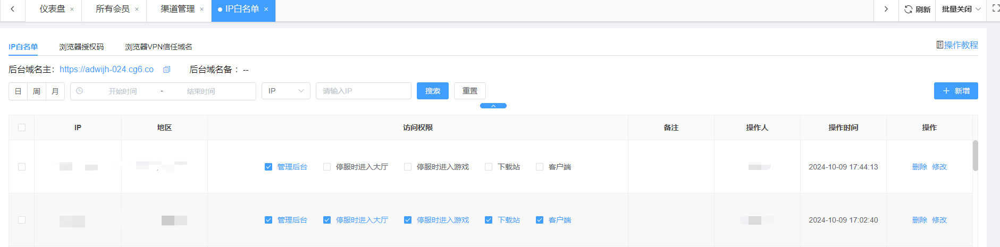
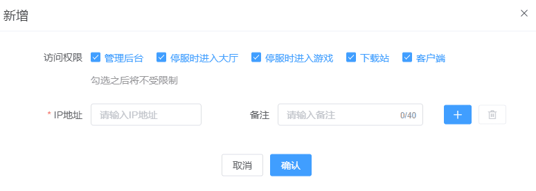
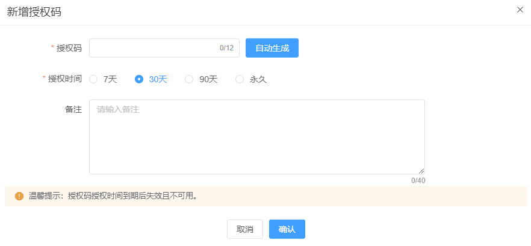
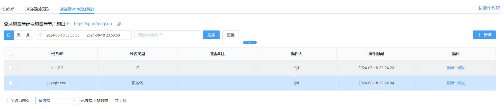

一、站点IP白名单
（1）搜索说明：可通过选项或文字搜索出对应账号（仅支持精准搜索）
（2）新增说明：点击右上角【新增】按钮后，选择对应的平台/访问权限，再输入对应的IP地址，无误后点击确认后即可
（3）页面操作说明：可直接在页面进行访问权限编辑以及删除操作

二、集团/公司IP白名单
（1）搜索说明：可通过选项或文字搜索出对应账号（仅支持精准搜索）
（2）新增说明：当前仅对【集团/公司后台地址】进行限制

（3）页面操作说明：可直接在页面进行访问权限编辑以及删除操作（可参考站点IP白名单操作）
三、浏览器授权码
（1）搜索说明：可通过选项或文字搜索出对应授权码使用情况（仅支持精准搜索）
（2）新增说明：新增WG加速器插件授权码用于登陆使用，下载WG加速器并根据教程安装（查阅Chrome浏览器安装WG加速器教程），管理理员新增生成授权码，并限制授权码使用期限，建议自动生成授权码！
（3）加速器与授权码用途：WG加速器的节点IP内置于站点/公司IP白名单规则，通过授权码登陆自动连接节点可根据自身网络切换节点，即可访问后台业务。

四、浏览器VPN信任域名
（1）搜索说明：可通过选项或文字搜索出对应域名或IP（仅支持精准搜索）
（2）新增说明：增加加速器域名/IP白名单地址用于WG加速器加白访问
（3）浏览器VPN信任域名：设置特定的URL地址或者IP地址不会被WG加速器拦截访问，可将外部域名与IP添加到白名单。登录加速器获取加速器节点加白IP加入外部域名白名单：https://ip.nf/me.json
